_© Obeo 2011 – All rights reserved. This program and the accompanying materials are made available under the terms of the Eclipse Public License v1.0_
Authors Stephane Drapeau / Yann MortierContact stephane.drapeau@obeo.fr
This section describes how to start using the TOGAF designer either from existing TOGAF models or by creating a new one.
Import the TravelAgency project using the menu File/New/Example....
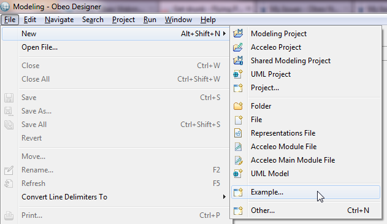
Pick the TOGAF Samples wizard anc click on Next and then pick the Travel Agency agency sample.
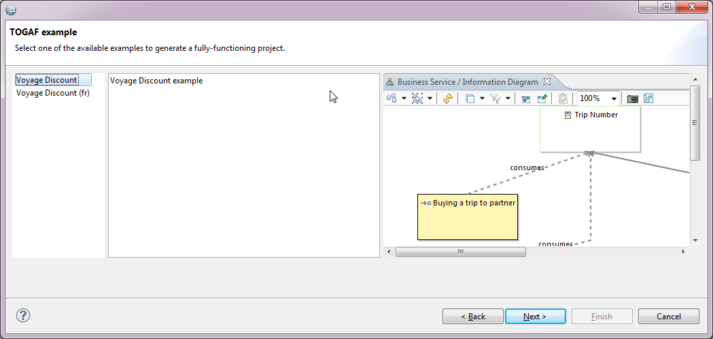
Click on Next, name your project and then click on Finish. The project appears in your workspace.
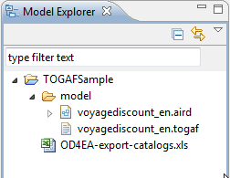
Double click on voyagediscount_en.aird to open the designer. The Diagrams are available:
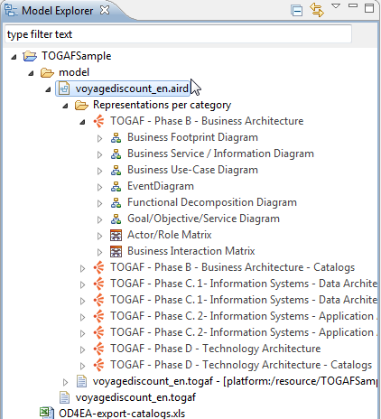
From here you can open the Data Dissemination diagram, for example
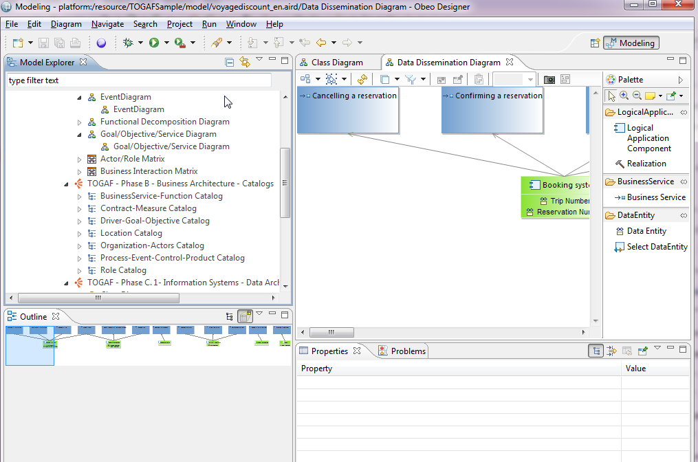
To create a new TOGAF project, ensure that the Modeling perspective is enabled.
You can check the active perspective in the top-right corner of the window.
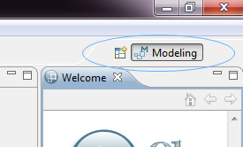
If the modeling perspective is not active then you have to open it. Click on the Open Perspective button and then select Other...
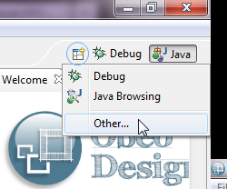
Select the Modeling perspective and the click on OK.
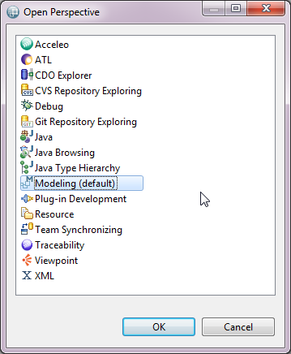
Then click on the wizard shortcuts at the top-left of the Eclipse Workbench. Select TOGAF Project.
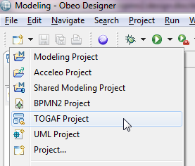
You can choose a specific name for the project.
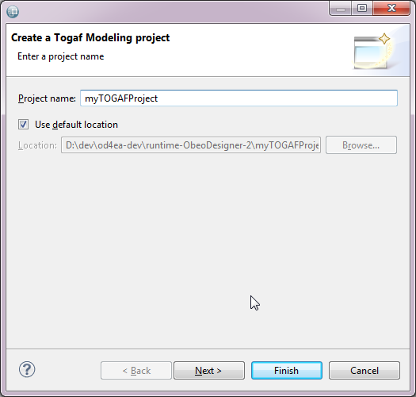
When you press the Finish button, the projects gets created and automatically enabled the TOGAF viewpoints.
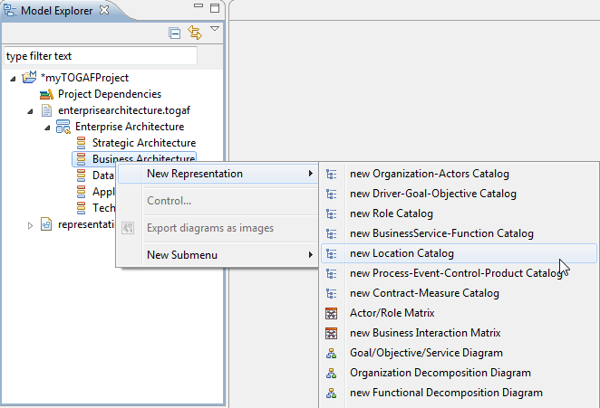